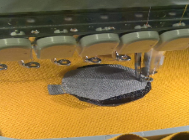
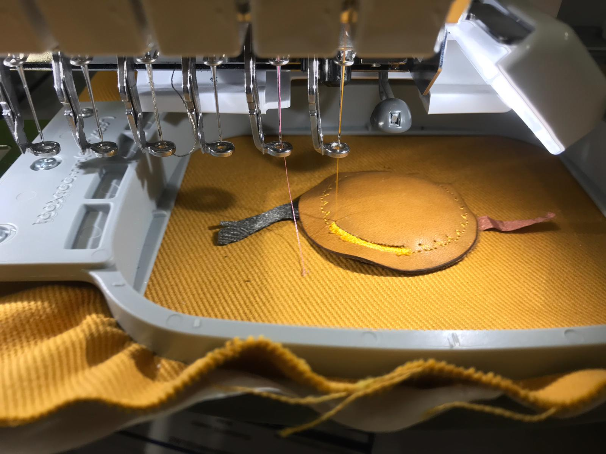

EMBRODERY MACHINE

CONDUCTIVE MATERIAL

For the knitting machine, the working needles have to be selected and put in working position. A type of comb must be placed and then the knitting machine device will be moved to both sides to start creating the piece of textile. A punch card must be added to the machine to create the knitting pattern. The needles can lose the position in the knitting devices is moved to fast. Be careful!
The final result it is a piece created by Liane using two materials one is conductive and the other not.
For creating theis sensor we used the embrodery machine. In this case the type of sensor was a pressure sensor, that means that is will convert the pressure into an electrical signal with different value depending on the pressure applied. In this case it is important to know that there are different type of materials needed for creating a sensor.
To the sensor it is needed to be placing layer by layer every material in the embrodery machine. First of all a big piece of fabric is placed in the machine. To avoid creasing it is recommended to iron the fabric before placing it into the machine.
Then we continue with a conductive material layer and a layer of insulated material on top.Finally another layer of conductive material and one more layer of fabric for visual purpuse.
It is important to know that in my case I use in one of the layer that demanded a conductive material, a stretching material. This means that it is really difficult to know the value of the sensor when we take the potenciometer because it would depend on the level of stretching the material is. Choose a non stretching material for this project